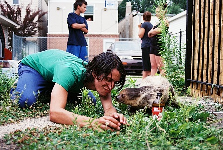
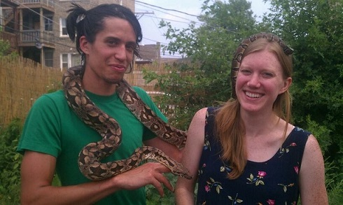

You can just invite a sloth to your birthday party!
It's true!
It might even bring friends!
How to make it happen
We're not sure exactly how it happened*, but we've got a few ideas. Just try as many of these as you can.
- Have it be your birthday.
- Have it be someone else's birthday, too.
- Tell the sloth it can bring its crew.
- Make sure it's a nice day.
- Have lots of beer and barbecue stuff.
- Sloths are vegetarian so don't just get hot dogs.
Frequently asked questions
| Question | Truth |
|---|---|
| Did the sloth touch you? | Yes |
| Was it gentle? | Sloths are only gentle |
| Was it a boy sloth? | It was a lady sloth |
| Did it poop? | That's kind of a rude question but yes definitely |
| Was it great? | I have been literally chasing that high 100% of the time since that day |